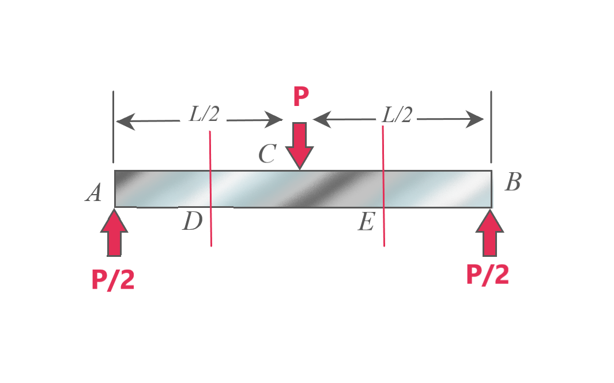

The shear force, axial force and bending moment are denoted by V, P and M respectively
In order to find their values, we apply the equilibrium equations (Fx=0, Fy=0 and Mz=0) but here, for each equation,
we balance the external forces with the internal forces.
The sign convention adopted for P, V and M is shown.
An easy way to remember the conventions is: For axial force, positive is directed away from the beam.
For bending moment, the beam becomes concave by applying positive moment (in the shape of a bowl)

By applying the same concepts to the given problem, we find that the expression for P, V and M are:
- Fx1 - Fx2 = 0
- -Fy1 - Fy2 + Fy3 + Fy4 + Fy5 = 0